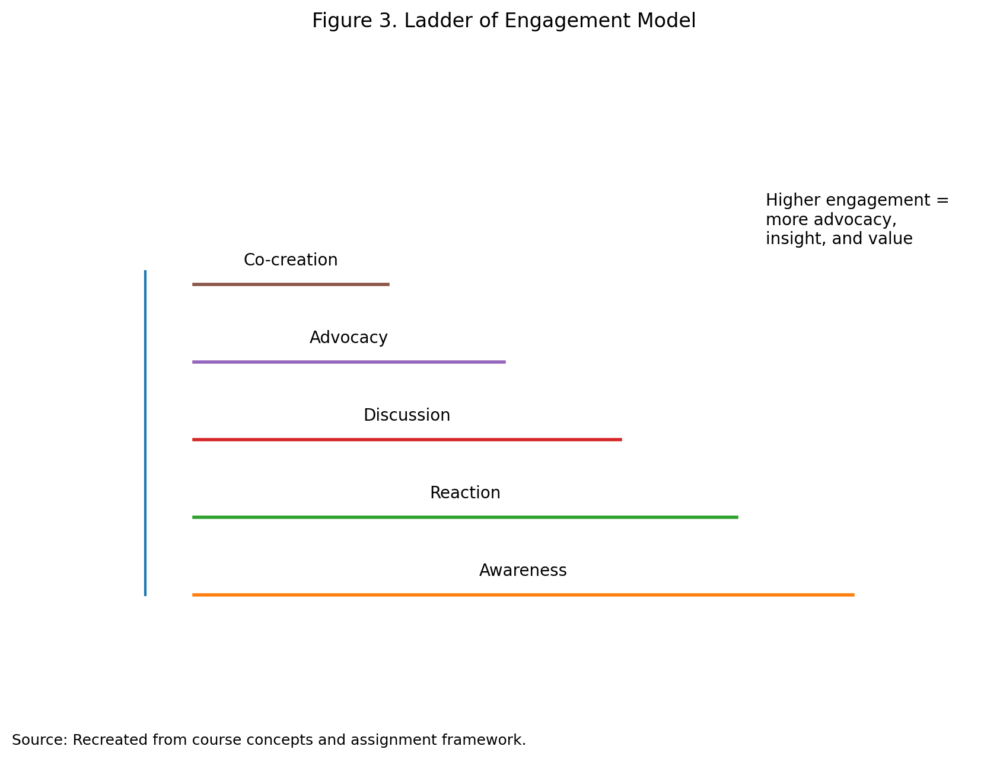
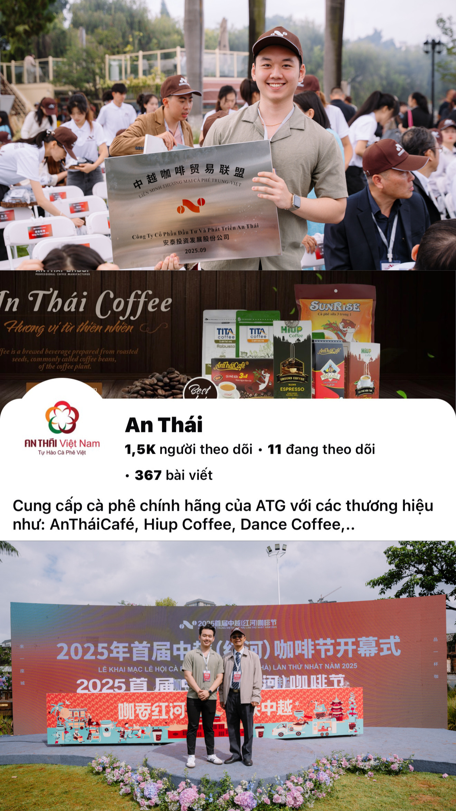
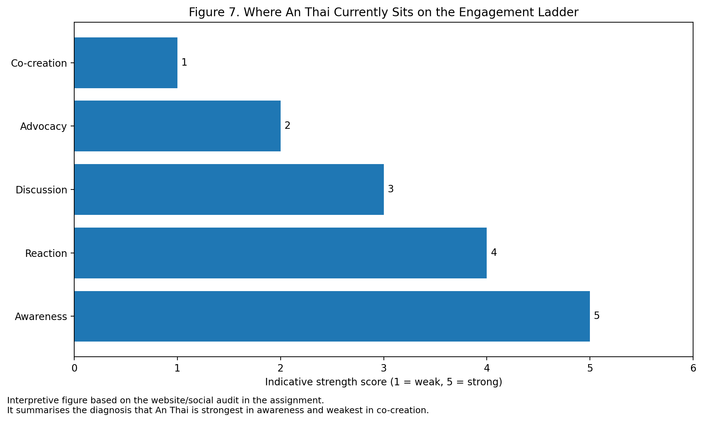

An Thai · engagement diagnosis
The Ladder of Engagement is useful because it helps distinguish between passive attention and deeper forms of customer participation.
The module materials explain that engagement is not a single event, but a progression from lighter touchpoints such as viewing, reacting, or rating, toward deeper behaviours such as discussion, advocacy, and co-creation. The same materials also highlight that most users remain observers, while only a smaller proportion interact and an even smaller group create content or collaborate. For managers, this means that a strong brand is not simply one that gets seen, but one that moves people upward through the ladder.
Applied to An Thai, the company currently performs best at the lower and middle levels of engagement. Its official websites provide a rich foundation for information-based engagement through company history, product categories, product descriptions, coffee-related content, visible certifications, and contact information. This is valuable because it creates awareness, trust, and interest. However, these remain largely brand-controlled interactions, which means they are strong for content exposure but weaker for deep customer participation.
At the next level, An Thai has the potential to generate reaction and discussion through Facebook and message-based interaction. A coffee brand naturally lends itself to comments, sharing, taste discussion, gifting suggestions, and product questions. If users react to posts, comment on products, or contact the brand through Messenger, the company has already moved beyond one-way communication. Yet the visible weakness is that An Thai does not appear to have a systematic engagement programme for encouraging reviews, public advocacy, or recurring user-generated content. The result is an uneven ladder: the company is strong at awareness and information, moderate at reaction and conversation, but weak at advocacy and co-creation.
From a managerial perspective, this matters because the upper rungs of the ladder create stronger social proof and lower-cost brand amplification. In practical terms, An Thai should not only inform consumers about products; it should also engineer participation. Review prompts, “share your coffee moment” posts, creator-led recipe content, and seasonal user-generated campaigns would help shift the brand from passive visibility toward deeper engagement. This is the main strategic lesson from the ladder analysis.

| Ladder stage | Evidence from An Thai | What it shows | Main gap |
|---|---|---|---|
| Awareness | Official website, brand story, product pages | Strong visibility and information base | Limited amplification evidence |
| Reaction | Facebook reactions, message enquiries | Users can respond easily | Not structured systematically |
| Discussion | Comments, Messenger conversations, product questions | Two-way interaction is possible | Limited public depth |
| Advocacy | Shares, reviews, customer stories | Weak and not actively engineered | Missing social proof |
| Co-creation | Product input, collaborative campaigns | Minimal visible evidence | Largest strategic gap |
An Thai’s engagement ladder is strongest at awareness and information, but weak at advocacy and co-creation.

The submitted document also includes an interpretive summary chart showing where An Thai currently sits on the engagement ladder. It visualises the same conclusion reached in the text and evidence table: strongest in awareness, moderate in reaction and discussion, and weakest in advocacy and co-creation.
